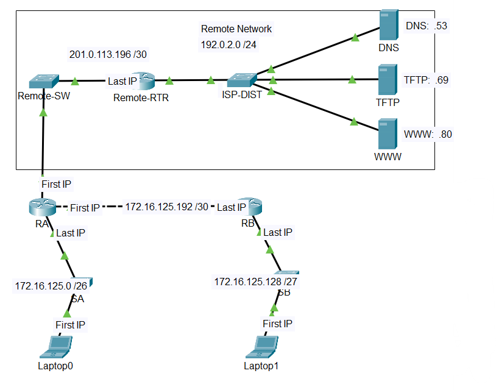

Lab Overview
This lab demonstrates my ability to design and test a basic network topology using Cisco Packet Tracer. The focus was on IP addressing, connectivity testing, and understanding how devices communicate on a network.
Note: This summary reflects my own learning and does not include assignment instructions or assessment materials.
What I Built
- A small network topology with end devices and networking devices
- Logical connections between devices
- IP addressing appropriate for the network design
Skills Demonstrated
- Understanding of basic network components (routers, switches, end devices)
- IPv4 addressing and subnet awareness
- Connectivity verification using ping
- Basic troubleshooting when connectivity failed
Evidence
Below is a screenshot of the network topology created in Cisco Packet Tracer.
What I Learned
- How incorrect IP addressing impacts network communication
- The importance of verifying each connection step-by-step
- How to use ping results to isolate network issues
Next Improvement
In a future iteration, I plan to extend this topology by introducing VLANs and testing inter-network communication.